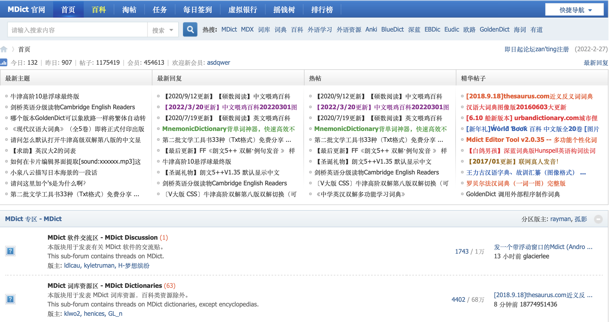
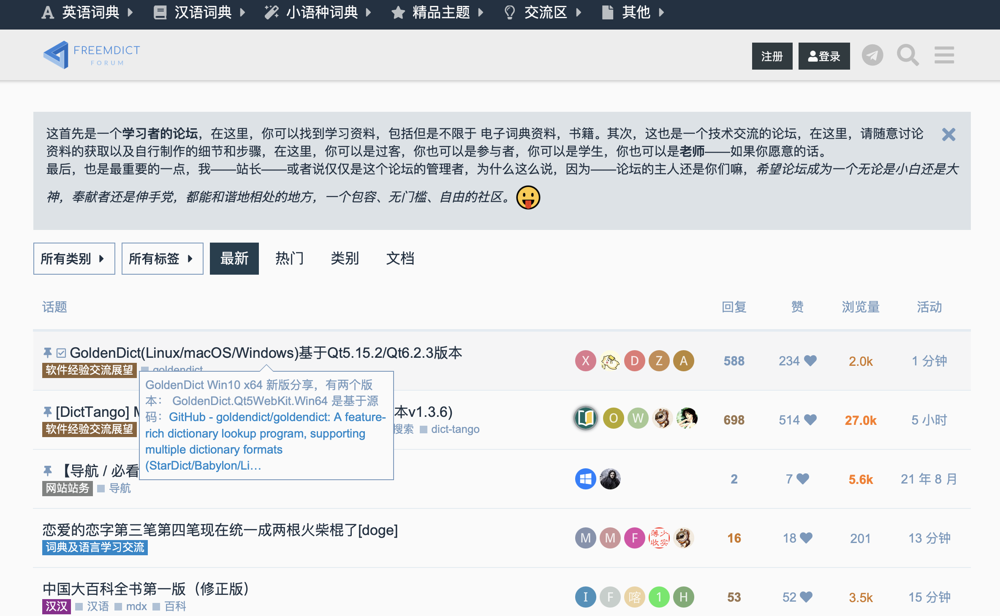

配置 OCR 插件：在 Goldendict 主界面菜单栏选择 Edit -> Preferences (快捷键 F4 ) ，选择 OCR Popup 栏目，设置 Screen Grabber -> WidgetMask , Engine -> Tesseract ，Languages -> English ，设置快捷键，然后重启软件。
导入词典资源：在 Goldendict 主界面菜单栏选择 Edit -> Dictionaries (快捷键 F3 ) 导入词典资源。
可移植版本：Goldendict 提供了一个可移植版本（portable version）。如果你在软件根目录（.exe 文件所在的目录）下新建一个 content 文件夹，并把词典文件放在其中的话，软件将总是从这个目录自动导入词典资源。
偏好设置：Preferences （快捷键 F4 ）中还有很多有用的设置，比如历史记录栏最多容纳单词数（默认是 500个），呼出/隐藏主界面的快捷键，等等。
更详细的教程请参考这里
论坛：pdawiki

论坛：freemdict
